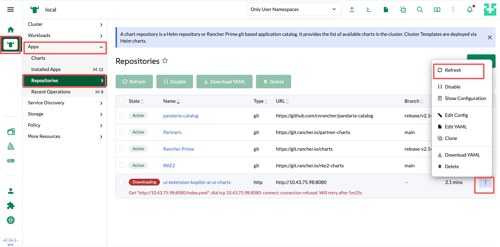

故障排除
快速故障排除
AI 助手位于 local 集群的 kopilot-system 命名空间中。您可以访问 Agent 日志来了解任何问题。
kubectl get po -n kopilot-system要获取 kopilot-agent pod 下 container kopilot-runtime 的日志：
kubectl logs -n kopilot-system -l app=kopilot-agent -c kopilot-runtime要获取 rancher-ai-mcp pod 的日志：
kubectl logs -n kopilot-system -l app=rancher-mcp-server启用 DEBUG 日志
您可以在通过 Helm 部署 Agent 时，将 agent.runtime.logLevel 设置为 DEBUG，以启用 DEBUG 日志。
更新 values.yaml
...
agent:
runtime:
logLevel: DEBUG
...更新 Helm Chart:
helm upgrade --install \
-n kopilot-system \
--create-namespace \
-f values.yaml \
kopilot ./kopilot-0.6.0.tgz在 Extensions 可用列表中看不到 SUSE AI Assistant GC
导入 Extension Catalog 后，返回 Extensions 页面，在可用列表中仍然看不到 SUSE AI Assistant GC。
您可以进入 Local 集群 → Apps → Repositories 页面，查看 ui-extension-kopilot-ai-ui-charts 的状态。
如果该 Repository 未处于 Active 状态，请点击下拉菜单中的 Refresh，直到该 Repository 变为 Active。

再次返回 Extensions 页面，即可看到 SUSE AI Assistant GC。
更新模型配置
模型配置存储在 kopilot-llm-config Secret 中。如果您通过 Settings 页面修改了模型配置，这些修改会直接保存到该 Secret。
默认情况下，执行 Helm upgrade 时不会覆盖现有的 kopilot-llm-config Secret：
llm:
# When false (default), helm upgrade keeps an existing kopilot-llm-config Secret
# (e.g. after UI edits). Set true to overwrite it from these values.
forceUpdate: false因此，如果您已经通过 Settings 页面配置了模型，修改 values.yaml 中的模型配置后执行 Helm upgrade，默认不会覆盖现有的模型配置。
如果希望使用 values.yaml 中的配置覆盖现有的 kopilot-llm-config Secret，请将 llm.forceUpdate 设置为 true：
llm:
forceUpdate: true|
如果您通过 Settings 页面配置了模型，请在更新之前，将所需的模型配置同步到 |
使用 Ingress NGINX 时出现 missing user header 错误
在本地 RKE2 集群中，如果使用 Ingress NGINX，访问相关服务时可能出现以下错误：
{ "type": "error", "links": {}, "code": "InvalidBodyContent", "message": "invalid request, missing user header", "status": 422 }解决方法
在 rke2-ingress-nginx-controller ConfigMap 中启用下划线请求头支持：
kubectl patch configmap rke2-ingress-nginx-controller -n kube-system \
--type merge \
-p '{"data":{"enable-underscores-in-headers":"true"}}'配置修改后会立即生效，无需重启 Ingress NGINX Controller。
您可以使用以下命令确认配置是否已生效：
kubectl get configmap rke2-ingress-nginx-controller -n kube-system \
-o jsonpath='{.data.enable-underscores-in-headers}'预期输出：
true使用过程中页面自动退出登录
访问 Liz GC UI 重定向次数过多，无法访问
使用外部负载均衡器上终止 TLS 的方式部署 Liz GC，访问其 UI 时出现了重定向次数过多，无法进入页面的问题。